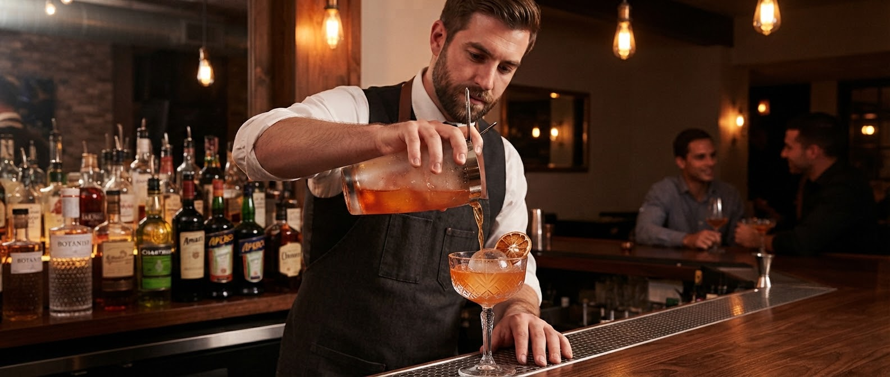
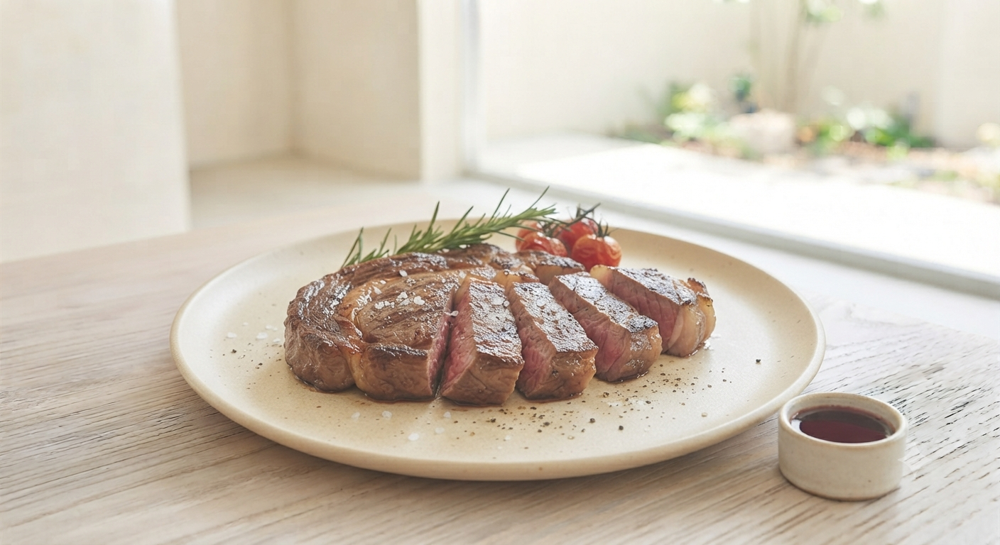

山形、香澄町。夜を彩る選択。
心解ける、 至福の一杯。
Dining Bar Choice - Yamagata
山形、香澄町。夜を彩る選択。
Dining Bar Choice - Yamagata
山形駅から徒歩圏内の隠れ家「Choice」。
オープン以来愛される理由は、
バーテンダーが腕を込めるカクテルと、
看板メニューのステーキ。そして温かな時間。
「美味しい」も「楽しい」も諦めない、
大人のためのアットホームな空間へようこそ。

Cocktail Culture

Customer Voice
「二次会、三次会で行くのに最適です！ 食事美味しいし、雰囲気いいし、安い完璧です！」
「ここで何度も素敵な夜を過ごしました。居心地の良い小さなお店で、スタッフはとてもフレンドリーです。」
「居心地がよい。カラオケが大盛り上がりの時の雰囲気も最高です！」
アットホームな接客と、本格的なコストパフォーマンス。一軒目としても、締めの場所としても。Choiceはいつだって、あなたの「ちょうどいい」場所です。
Free Flow Course ¥3,000〜
Signature Steak ¥1,280〜
Online Limited
Present this screen on arrival
※お一人様2,000円以上のご利用に限ります。他クーポン併用不可。
二次会・三次会の最後に「運転代行が来るまでのちょっとした時間」を、もっと快適に過ごしていただけるよう、Choiceならではの新しいおもてなしを企画・開発中です。
楽しかった夜の最後に。温かい特製甘酒スープやお茶、体に優しい締めの一杯をご用意。
重すぎず、代行を待つ15〜20分でサッと楽しめるミニおお茶漬けや出汁メニューを考案中。
※近日スタート予定！ 楽しみにお待ちください。